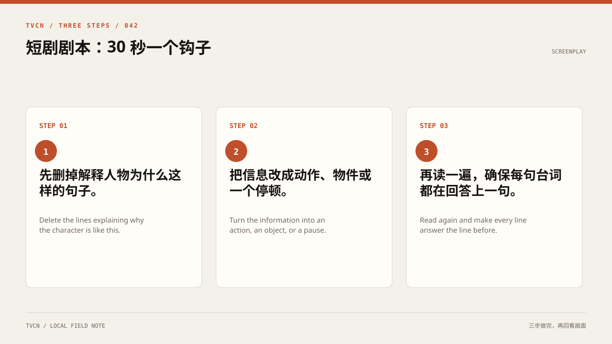

现场
每 30 秒列一个局面变化：身份暴露、钱被拿走、门被锁。把变化写成画面，不靠角色解释。
怎么做
- 每 30 秒列一个局面变化：身份暴露、钱被拿走、门被锁。
- 把变化写成画面，不靠角色解释。
- 结尾留一个未回答的问题，不要总结。下一条仍能接上。
别踩
别让角色解释反转；反转要发生在画面上。
DIAGRAM / Screenplay
三步流程

三种原因
针对“短剧剧本：30 秒一个钩子”，先按三个方向排查；每次只改一个变量，改完录 30 秒对比，看变化跟着哪个环节走。
| 原因 | 现场信号 | 5 分钟验证 |
|---|---|---|
| 前 3 秒没有冲突 | 开场是环境/旁白，观众划走 | 第一句就给目标+障碍 |
| 钩子太晚 | 第一个反转在 40 秒后，前 30 秒没有变化 | 把反转提到 10 秒内 |
| 结尾没有悬念 | 每集结束在答案，下一集没有理由点开 | 结尾留一个未解决的问题 |
现场诊断
- 把 0–3 秒、3–10 秒、10–30 秒各写一句发生了什么。
- 数 30 秒内有几个信息变化；少于 2 个就重写。
- 看最后一帧：观众是否知道下一集要发生什么。
修法
短剧不是把长剧剪短，是每 30 秒完成一次承诺和一次新问题。先给冲突，再给反转，最后留钩子。
- 第一句台词包含人物、目标和障碍，不要用环境开场。
- 10 秒内给第一次反转；30 秒内给第二次小变化。
- 每集结尾让主角做一个选择，选择带来新问题。
- 把解释删掉，用动作和道具推进。
失败案例
处理“短剧剧本：30 秒一个钩子”时，下面三种做法会更糟；先选一个替换动作，别同时改三个变量。
| 失败做法 | 为什么会更糟 | 替换动作 |
|---|---|---|
| 用音乐硬钩 | 音乐很响，画面没有发生事 | 先写事件 |
| 每集都反转 | 观众疲劳，反转失去重量 | 小变化+大反转交替 |
| 结尾总结 | 旁白把下一集说完了 | 停在问题上 |
验收表
验收不是“感觉好了”，是这四项都能指认、能回放、能记录。
| 验收项 | 通过线 | 记录 |
|---|---|---|
| 前 3 秒 | 有目标、障碍或异常 | 逐秒标记 |
| 10 秒 | 第一次反转已发生 | 计时 |
| 30 秒 | 至少两个信息变化 | 数变化 |
| 结尾 | 留下一个未解决问题 | 看最后一帧 |
图片说明：本页封面、图解与步骤图是编辑示意或结构图，不是本页实测照片，也不能当作器材测试证据；AI 辅助生成的图会在图注标出。判断器材或画面，以正文的测试条件与现场记录为准。